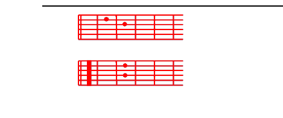

M.Cd *Wewe ndiwe tumaini langu, ee Bwana,
Bb7 **wala sitaaiA7bika;
Cd *kwa utukufu wako uliniumba,
katika rBb7ehema uliniA7fanya.
D-Ulinitoa kwenye shimo la ShAeoli,
toka kinywa cha Bb7mauti ulininAg’oa.
K.D-Ulinitoa kwenye shimo la ShAeoli,
toka kinywa cha Bb7mauti ulininAg’oa.
Kwa kuwa nilimwaD-mini masiha A7wako,
na Bb7kwamba ndiye Bwana nilA7ikiri.
* (Kupiga nyuzi tatu za kwanza tu)
**Bb7
M.G-Wewe ulinipa ishara Akuu,
G-fumbo lililofichwa kwa malAaika,
kufanya Bb7vita kwa neno A7lako,
na kurudi mBb7shindi toka matAaifa.
K.D-Ulinitoa...
K.D-Wewe ndiwe tumaini langu, ee BAwana,
Bb7wala sitaaiAbika!
D-Wewe ndiwe tumaini langu, ee BAwana,
Bb7wala sitaaiAbika!
